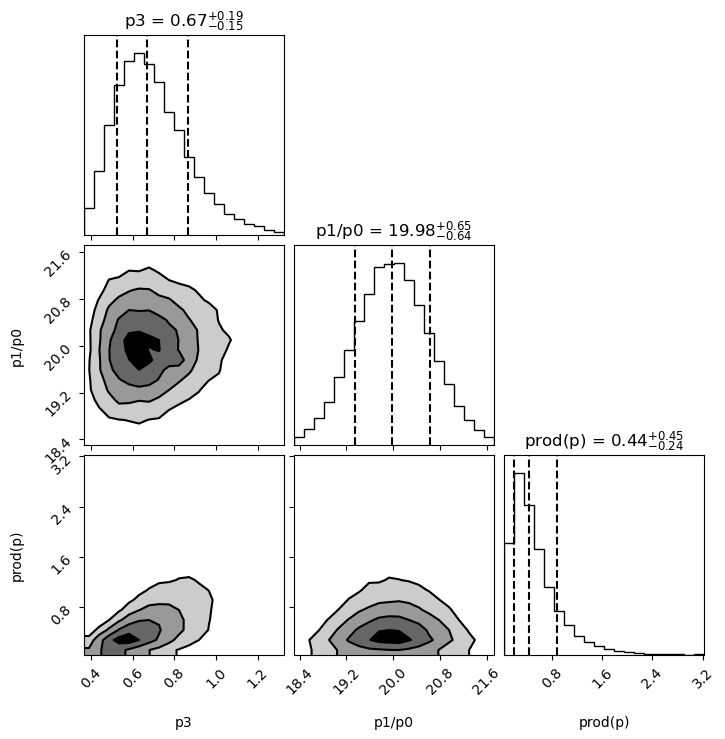

Non-Gaussian Behavior; Testing Fits¶
Introduction¶
The various analyses in the Tutorial assume implicitly that every
probability distribution relevant to a fit is Gaussian. The input
data and priors are assumed Gaussian. The chi**2 function is
assumed to be well approximated by a Gaussian in the vicinity of
its minimum, in order to estimate uncertainties for the best-fit
parameters. Functions of those parameters are assumed to yield
results that are described by Gaussian random variables. These assumptions
are usually pretty good for high-statistics data, when standard deviations
are small, but can lead to problems with low statistics.
Here we present three methods for testing these assumptions. Some of these techniques, like the statistical bootstrap and Bayesian integration, can also be used to analyze non-Gaussian results.
Bayesian Integrals¶
lsqfit.vegas_fit provides an alternative fitting strategy
(multi-dimensional Bayesian integrals) from that used by
lsqfit.nonlinear_fit. Both approaches assume that the fit parameters
are described by a probability distribution whose
probability density function (PDF) is proportional to
.
has contributions from both the data and the prior:
where
and .
Both of these approaches characterize this distribution by
specifying best-fit mean values and covariances for the
fit parameters (packaged as an array or dictionary of gvar.GVars).
lsqfit.nonlinear_fit estimates the mean values
and covariances from the minimum of and its
curvature at the minimum, while lsqfit.vegas_fit calculates the
actual means and standard deviations of the parameters
by evaluating the following integrals:
The integrals are evaluated numerically, using adaptive Monte Carlo integration
(PDFIntegrator from the vegas
module).
The best-fit results from the two approaches agree when
is well approximated by the quadratic expansion around its
minimum — that is,
insofar as
is well approximated
by a Gaussian distribution in the parameters.
But the results can differ significantly otherwise; the output from nonlinear_fit
is the Gaussian approximation to that from vegas_fit.
To compare vegas_fit with nonlinear_fit, we revisit
the analysis in the section
on Correlated Parameters; Gaussian Bayes Factor. We modify the end of the main() function
in the original code to repeat the analysis using vegas_fit:
import numpy as np
import gvar as gv
import lsqfit
import vegas
def main():
x, y = make_data()
prior = make_prior()
# nonlinear_fit
fit = lsqfit.nonlinear_fit(prior=prior, data=(x,y), fcn=fcn)
print(20 * '-', 'nonlinear_fit')
print(fit)
print('p1/p0 =', fit.p[1] / fit.p[0], ' prod(p) =', np.prod(fit.p))
print('corr(p0,p1) = {:.2f}'.format(gv.evalcorr(fit.p[:2])[1,0]), '\n')
# vegas_fit
vfit = lsqfit.vegas_fit(prior=prior, data=(x,y), fcn=fcn)
print(20 * '-', 'vegas_fit')
print(vfit)
# measure p1/p0 and prod(p)
@vegas.rbatchintegrand
def g(p):
return {'p1/p0':p[1] / p[0], 'prod(p)':np.prod(p, axis=0)}
s = vfit.stats(g)
print('p1/p0 =', s['p1/p0'], ' prod(p) =', s['prod(p)'])
print('corr(p0,p1) = {:.2f}'.format(gv.evalcorr(vfit.p[:2])[1,0]))
def make_data():
x = np.array([
4., 2., 1., 0.5, 0.25, 0.167, 0.125, 0.1, 0.0833, 0.0714, 0.0625
])
y = gv.gvar([
'0.198(14)', '0.216(15)', '0.184(23)', '0.156(44)', '0.099(49)',
'0.142(40)', '0.108(32)', '0.065(26)', '0.044(22)', '0.041(19)',
'0.044(16)'
])
return x, y
def make_prior():
p = gv.gvar(['0(1)', '0(1)', '0(1)', '0(1)'])
p[1] = 20 * p[0] + gv.gvar('0.0(1)') # p[1] correlated with p[0]
return p
@vegas.rbatchintegrand
def fcn(x, p):
if p.ndim == 2:
# add batch index to x if in batch mode
x = x[:, None]
return (p[0] * (x**2 + p[1] * x)) / (x**2 + x * p[2] + p[3])
if __name__ == '__main__':
main()
Running this code gives the following output:
-------------------- nonlinear_fit
Least Squares Fit:
chi2/dof [dof] = 0.61 [11] Q = 0.82 logGBF = 19.129
Parameters:
0 0.149 (17) [ 0 ± 1.0 ]
1 2.97 (34) [ 0 ± 20 ]
2 1.23 (61) [ 0 ± 1.0 ] *
3 0.59 (15) [ 0 ± 1.0 ]
Settings:
svdcut/n = 1e-12/0 tol = (1e-08*,1e-10,1e-10) (itns/time = 18/0.0s)
p1/p0 = 19.97(67) prod(p) = 0.32(28)
corr(p0,p1) = 0.96
-------------------- vegas_fit
Least Squares Fit:
chi2/dof [dof] = 0.66 [11] Q = 0.78 logBF = 19.141(18)
Parameters:
0 0.155 (14) [ 0 ± 1.0 ]
1 3.11 (30) [ 0 ± 20 ]
2 1.45 (54) [ 0 ± 1.0 ] *
3 0.70 (18) [ 0 ± 1.0 ]
Settings:
svdcut/n = 1e-12/0 (time = 0.1s)
fitter = vegas_fit (chi2/dof [dof] = 0.85 [135] Q = 0.89)
p1/p0 = 19.99(65) prod(p) = 0.56(40)
corr(p0,p1) = 0.94
There are several things to notice about these results:
The fit results
vfit.pfromlsqfit.vegas_fitare quite similar to those fromlsqfit.nonlinear_fit(fit.p), as arevfit.chi2andfit.chi2, andvfit.logBFandfit.logGBF. This suggests that the Gaussian approximation used bylsqfit.nonlinear_fitis a reasonable approximation to the full Bayesian analysis used bylsqfit.vegas_fit.vfit.logBFhas an uncertainty of about 0.1%. This comes from the uncertainty in thevegasestimate of the norm of the PDF ( above).vegasuses adaptive Monte Carlo integration to estimate the values of integrals, as well as the uncertainties in those estimates.The accuracy of
lsqfit.vegas_fit’s integrals can almost always be improved by using information from the fit withlsqfit.nonlinear_fit. For example, replacing thevfitline in the code above withvfit = lsqfit.vegas_fit(prior=prior, data=(x,y), fcn=fcn, param=fit.p)
reduces the error on
vfit.logBFby about a factor of two:-------------------- vegas_fit (param=fit.p) Least Squares Fit: chi2/dof [dof] = 0.66 [11] Q = 0.78 logBF = 19.159(8) Parameters: 0 0.155 (15) [ 0 ± 1.0 ] 1 3.09 (31) [ 0 ± 20 ] 2 1.44 (56) [ 0 ± 1.0 ] * 3 0.70 (20) [ 0 ± 1.0 ] Settings: svdcut/n = 1e-12/0 (time = 0.1s) fitter = vegas_fit (chi2/dof [dof] = 0.85 [135] Q = 0.9) p1/p0 = 20.00(65) prod(p) = 0.54(40) corr(p0,p1) = 0.95The integrals for the means and covariances are similarly improved (compare
vfit.p.vegas_meanandvfit.p.vegas_covwith and withoutparam=fit.p).The integrator re-expresses the fit parameter integrals in terms of new variables that are optimized for integrating the (Gaussian) distribution corresponding to
param. By defaultparam=prior, butparam=fit.pis almost certainly a better match to the actual PDF used in the integrals.A more succinct way to use results from
lsqfit.nonlinear_fitobjectfitisvfit = lsqfit.vegas_fit(fit=fit)
where
vfit’sprior,data, andfcnare copied fromfit.Values for
p[1]/p[0]and for the product of all thep[i]s are obtained fromvfit.stats(g). This usesvfit’s (trained) integrator to evaluate the means and covariances of the components ofg(p). While results from the two fits agree well onp[1]/p[0], results forprod(p)do not agree so well. This suggests that the distribution forprod(p)in not as well approximated by a Gaussian.More information about the distributions can be obtained from
vfit.statsby using keywordsmomentsandhistograms:s = vfit.stats(g, moments=True, histograms=True) for k in s.stats: print('\n' + 20 * '-', k) print(s.stats[k]) plot = s.stats[k].plot_histogram() plot.xlabel(k) plot.show()
This results in the following output
-------------------- p1/p0 mean = 19.9973(45) sdev = 0.6500(39) skew = 0.046(23) ex_kurt = 0.084(46) split-normal: 19.972(15) +/- 0.6682(97)/0.6350(97) median: 19.9901(68) +/- 0.663(10)/0.648(10) -------------------- prod(p) mean = 0.5434(26) sdev = 0.4008(48) skew = 1.783(62) ex_kurt = 4.87(48) split-normal: 0.13617(99) +/- 0.5779(44)/0.0476(19) median: 0.4387(28) +/- 0.4458(54)/0.2353(33)together with histogram plots for the distributions of
p[1]/p[0]andprod(p):The distribution for
prod(p)is clearly skewed. The plot shows the actual distribution (gray bars) and the Gaussian (blue dots) corresponding tos['prod(p)'], 0.55 ± 0.41. It also shows fits to two two-sided Gaussian models: one that is continuous (split-normal, solid green line) and another centered on the median that is discontinuous (red dashes). The median fit suggests that a better description of theprod(p)distribution might be 0.44 plus 0.45 minus 0.24, although any of the three models gives a reasonable impression of the range of possible values forprod(p).A simple way to create histograms and contour plots of the probability density is from samples drawn from the underlying distribution used in the fit:
import corner import matplotlib.pyplot as plt wgts,psamples = vfit.sample(nbatch=100_000) samples = dict() samples['p3'] = psamples[3] samples['p1/p0'] = psamples[1] / psamples[0] samples['prod(p)'] = np.prod(psamples, axis=0) corner.corner( data=samples, weights=wgts, range=3 * [0.99], show_titles=True, quantiles=[0.16, 0.5, 0.84], plot_datapoints=False, fill_contours=True, ) plt.show()
Here
lsqfit.vegas_fit.sample()is used to draw approximately 100,000 samples whose weighted density is proportional to . The samples corresponding to parameterp[d]arepsamples[d, i]wherei=0,1,2...100_000(approx); the corresponding weights arewgts[i]. Samples for the quantities of interest are collected in dictionarysamples. ThecornerPython module is used to create histograms of the probability density for each of the quantities insample; it also creates contour plots of the joint densities for each pair of quantities:The histograms are labeled by the median value plus or minus intervals that each enclose 34% of the probability (
quantiles=[0.16, 0.5, 0.84]).The
cornermodule (and thearvizmodule) must be installed separately.A
vegasintegration is much faster if the integrand can process large batches of integration points simultaneously. An example isfcn(x, p)above. When called bylsqfit.nonlinear_fit, parameterprepresents a single point in parameter space with coordinatesp[d]whered=0...3. When called byvegas_fit(in rbatch mode),prepresents a large number of points in parameter space with coordinatesp[d,i]whered=0...3labels the direction in parameter space, andi, the batch index, labels the different points in parameter space. The function checks to see if it is being used in batch mode, and adds a batch index toxif it is. The decorator@vegas.rbatchintegrandtellsvegasthat the function can be called in batch mode. (See thevegasdocumentation for more information.)vegasuses an iterative algorithm to adapt to the PDF. By default,lsqfit.vegas_fituses 10 iterations to train the integrator to the PDF, and then 10 more, without further adaptation, to evaluate the integrals for the means and covariances of the fit parameters, and the PDF’s norm (see equations above). Printingvfit.training.summary()shows estimates for the norm from each of the first 10 iterations (here withoutparam=fit.p):itn integral wgt average chi2/dof Q ------------------------------------------------------- 1 6.7(6.7)e-06 6.7(6.7)e-06 0.00 1.00 2 1.04(41)e-06 1.06(41)e-06 0.71 0.40 3 0.0012(11) 1.06(41)e-06 0.98 0.37 4 2.8(1.0)e-05 1.11(41)e-06 2.93 0.03 5 2.90(76)e-05 1.19(41)e-06 5.59 0.00 6 7.4(3.3)e-05 1.20(41)e-06 5.47 0.00 7 4.44(83)e-05 1.30(41)e-06 9.02 0.00 8 4.66(67)e-05 1.47(41)e-06 14.32 0.00 9 5.26(79)e-05 1.61(41)e-06 17.73 0.00 10 4.40(27)e-05 2.57(40)e-06 43.03 0.00
The uncertainties in the first column are 25–60 times smaller after
vegashas adapted to the PDF.vegasaverages results from different iterations, but results from the training iterations are frequently unreliable and so are discarded. The final results come from the final 10 iterations (seevfit.p.summary()).The accuracy of the integrals is determined by the number of iterations
nitnused and, especially, by the number of integrand evaluationsnevalallowed for each iteration. The defaults for these parameters arenitn=(10,10)andneval=1000. The followingvfit = lsqfit.vegas_fit(fit=fit, nitn=(6, 10), neval=100_000)
reduces the number of training iterations to 6 but also increases the number of integrand evaluations by a factor of 100. The integration errors are then about 20 times smaller, which is much smaller than is needed here. This particular problem, however, is relatively easy for
vegas; other problems could well require hundreds of thousands or millions of integration evaluations per iteration.At the end of Correlated Parameters; Gaussian Bayes Factor, we examined what happened to the
lsqfit.nonlinear_fitwhen the correlation (p[1]is approximately20*p[0]) was removed from the prior by settingprior = gv.gvar(['0(1)', '0(20)', '0(1)', '0(1)']).
The fit result is completely different with the uncorrelated prior when using
lsqfit.nonlinear_fit. This is not the case withlsqfit.vegas_fit, where the uncorrelated prior leads to the following fit:-------------------- vegas_fit (uncorrelated prior) Least Squares Fit: chi2/dof [dof] = 0.91 [11] Q = 0.53 logBF = 18.566(793) Parameters: 0 0.126 (25) [ 0 ± 1.0 ] 1 4.6 (1.2) [ 0 ± 20 ] 2 1.28 (27) [ 0 ± 1.0 ] * 3 1.04 (27) [ 0 ± 1.0 ] * Settings: svdcut/n = 1e-12/0 (time = 0.1s) fitter = vegas_fit (chi2/dof [dof] = 0.58 [135] Q = 1) p1/p0 = 18.2(8.6) prod(p) = 0.45(43) corr(p0,p1) = -0.93These results are quite similar to what is obtained with the correlated prior, although less accurate. This suggests that the Gaussian approximation assumed by
lsqfit.nonlinear_fitis unreliable for the uncorrelated problem. This might have been anticipated since three of the four parameters have means that are effectively zero (compared to their standard deviations).
{kind=link}
{kind=link}
A central assumption when using lsqfit.nonlinear_fit or lsqfit.vegas_fit is that
the data are drawn from a Gaussian distribution.
Case Study: Outliers and Bayesian Integrals shows how to use vegas.PDFIntegrator
directly, rather than lsqfit.vegas_fit,
when the input data are not Gaussian. It discusses
two versions of a fit, one with 5 parameters
and the other with 22 parameters.
Bootstrap Error Analysis; Non-Gaussian Output¶
The bootstrap provides another way to check on a fit’s validity, and also a method for analyzing non-Gaussian outputs. The strategy is to:
make a large number of “bootstrap copies” of the original input data and prior that differ from each other by random amounts characteristic of the underlying randomness in the original data and prior (see the documentation for
for more information);
repeat the entire fit analysis for each bootstrap copy of the data and prior, extracting fit results from each;
use the variation of the fit results from bootstrap copy to bootstrap copy to determine an approximate probability distribution (possibly non-Gaussian) for the each result.
To illustrate, we revisit the fit in the section on Positive Parameters; Non-Gaussian Priors, where the goal is to average noisy data subject to the constraint that the average must be positive. The constraint is likely to introduce strong distortions in the probability density function (PDF) given that the fit analysis suggests a value of 0.011 ± 0.013. We will use a bootstrap analysis to investigate the distribution of the average. We do this by adding code right after the fit:
import gvar as gv
import lsqfit
import numpy as np
y = gv.gvar([
'-0.17(20)', '-0.03(20)', '-0.39(20)', '0.10(20)', '-0.03(20)',
'0.06(20)', '-0.23(20)', '-0.23(20)', '-0.15(20)', '-0.01(20)',
'-0.12(20)', '0.05(20)', '-0.09(20)', '-0.36(20)', '0.09(20)',
'-0.07(20)', '-0.31(20)', '0.12(20)', '0.11(20)', '0.13(20)'
])
# nonlinear_fit
prior = gv.BufferDict()
prior['f(a)'] = gv.BufferDict.uniform('f', 0, 0.04)
def fcn(p, N=len(y)):
return N * [p['a']]
fit = lsqfit.nonlinear_fit(prior=prior, data=y, fcn=fcn)
print(20 * '-', 'nonlinear_fit')
print(fit)
print('a =', fit.p['a'])
# Nbs bootstrap copies
Nbs = 1000
a = []
for bsfit in fit.bootstrapped_fit_iter(Nbs):
a.append(bsfit.p['a'].mean)
avg_a = gv.dataset.avg_data(a, spread=True)
print('\n' + 20 * '-', 'bootstrap')
print('a =', avg_a)
counts,bins = np.histogram(a, density=True)
s = gv.PDFStatistics(histogram=(bins, counts))
print(s)
plot = s.plot_histogram()
plot.xlabel('a')
plot.show()
fit.bootstrapped_fit_iter(Nbs) produces fits bsfit for each of
Nbs=1000 different bootstrap copies of the input data (y and the prior).
We collect the mean values for parameter a, ignoring the uncertainties, and
then calculate the average and standard deviation from these results using
gvar.dataset.avg_data(). We then use gvar.PDFStatistics to analyze
the distribution of the a values and create a histogram of its PDF.
The bootstrap estimate for a agrees reasonably well with the result from lsqfit.nonlinear_fit,
but the statistical analysis shows that the distribution of a values is skewed (towards
positive a values):
-------------------- nonlinear_fit
Least Squares Fit:
chi2/dof [dof] = 0.85 [20] Q = 0.65 logGBF = 5.2385
Parameters:
f(a) -0.59 (96) [ 0 ± 1.0 ]
-----------------------------------------------
a 0.011 (13) [ 0.020 (16) ]
Settings:
svdcut/n = 1e-12/0 tol = (1e-08*,1e-10,1e-10) (itns/time = 15/0.1s)
a = 0.011(13)
-------------------- bootstrap
a = 0.014(10)
mean = 0.013974667685490355 sdev = 0.010333 skew = 0.86437 ex_kurt = -0.22463
split-normal: None
median: 0.011050094668754508 +/- 0.014386/0.0069843
This is confirmed by the histogram:
{kind=link}
Fitting with lsqfit.vegas_fit rather than lsqfit.nonlinear_fit gives the same result as the
bootstrap for the average value of a, but is 10x faster (and more accurate):
-------------------- vegas_fit
Least Squares Fit:
chi2/dof [dof] = 0.85 [20] Q = 0.65 logBF = 5.1599(3)
Parameters:
f(a) -0.50 (93) [ 0 ± 1.0 ]
a 0.014 (10) [ 0.020 (16) ]
Settings:
svdcut/n = 1e-12/0 (time = 0.3s)
fitter = vegas_fit (chi2/dof [dof] = 1.2 [54] Q = 0.14)
The histogram from lsqfit.vegas_fit is also similar to that from the bootstrap.
Testing Fits with Simulated Data¶
Ideally we would test a fitting protocol by doing fits of data similar to our actual fit but where we know the correct values for the fit parameters ahead of the fit. Method
returns an iterator that creates any number of such simulations of the original fit.
A key assumption underlying least-squares fitting is that the fit
data y[i] are random samples from a distribution whose mean
is the fit function fcn(x, fitp) evaluated with the best-fit
values fitp for the parameters. simulated_fit_iter iterators
generate simulated data by drawing other random samples from the
same distribution, assigning them the same covariance matrix as the
original data. The simulated data are fit
using the same priors and fitter settings
as in the original fit, and the results (an lsqfit.nonlinear_fit
object) are returned by the iterator. The fits with simulated data should
have good chi**2 values, and the results from these fits
should agree, within errors, with the original fit results since the
simulated data are from the same distribution as the original data. There
is a problem with the fitting protocol if this is not the case most of the
time.
To illustrate we again examine the fits
in the section on Correlated Parameters; Gaussian Bayes Factor:
we add three fit simulations at the end of the main() function:
import numpy as np
import gvar as gv
import lsqfit
def main():
x, y = make_data()
prior = make_prior()
fit = lsqfit.nonlinear_fit(prior=prior, data=(x,y), fcn=fcn)
print(40 * '*' + ' real fit')
print(fit.format(True))
# 3 simulated fits
for sfit in fit.simulated_fit_iter(n=3):
# print simulated fit details
print(40 * '=' + ' simulation')
print(sfit.format(True))
# compare simulated fit results with exact values (pexact=fit.pmean)
diff = sfit.p - sfit.pexact
print('\nsfit.p - pexact =', diff)
print(gv.fmt_chi2(gv.chi2(diff)))
print
def make_data():
x = np.array([
4. , 2. , 1. , 0.5 , 0.25 , 0.167 , 0.125 ,
0.1 , 0.0833, 0.0714, 0.0625
])
y = gv.gvar([
'0.198(14)', '0.216(15)', '0.184(23)', '0.156(44)', '0.099(49)',
'0.142(40)', '0.108(32)', '0.065(26)', '0.044(22)', '0.041(19)',
'0.044(16)'
])
return x, y
def make_prior():
p = gv.gvar(['0(1)', '0(1)', '0(1)', '0(1)'])
p[1] = 20 * p[0] + gv.gvar('0.0(1)') # p[1] correlated with p[0]
return p
def fcn(x, p):
return (p[0] * (x**2 + p[1] * x)) / (x**2 + x * p[2] + p[3])
if __name__ == '__main__':
main()
This code produces the following output, showing how the input data fluctuate from simulation to simulation:
**************************************** real fit
Least Squares Fit:
chi2/dof [dof] = 0.61 [11] Q = 0.82 logGBF = 19.129
Parameters:
0 0.149 (17) [ 0 ± 1.0 ]
1 2.97 (34) [ 0 ± 20 ]
2 1.23 (61) [ 0 ± 1.0 ] *
3 0.59 (15) [ 0 ± 1.0 ]
Fit:
x[k] y[k] f(x[k],p)
--------------------------------------
4 0.198 (14) 0.193 (11)
2 0.216 (15) 0.210 (10)
1 0.184 (23) 0.209 (15) *
0.5 0.156 (44) 0.177 (15)
0.25 0.099 (49) 0.124 (13)
0.167 0.142 (40) 0.094 (12) *
0.125 0.108 (32) 0.075 (11) *
0.1 0.065 (26) 0.0629 (96)
0.0833 0.044 (22) 0.0538 (87)
0.0714 0.041 (19) 0.0471 (79)
0.0625 0.044 (16) 0.0418 (72)
Settings:
svdcut/n = 1e-12/0 tol = (1e-08*,1e-10,1e-10) (itns/time = 18/0.1s)
======================================== simulation
Least Squares Fit:
chi2/dof [dof] = 1.4 [11] Q = 0.18 logGBF = 13.7
Parameters:
0 0.118 (11) [ 0 ± 1.0 ]
1 2.36 (24) [ 0 ± 20 ]
2 0.28 (34) [ 0 ± 1.0 ]
3 0.416 (83) [ 0 ± 1.0 ]
Fit:
x[k] y[k] f(x[k],p)
--------------------------------------
4 0.170 (14) 0.171 (11)
2 0.211 (15) 0.207 (10)
1 0.227 (23) 0.234 (17)
0.5 0.184 (44) 0.209 (21)
0.25 0.167 (49) 0.140 (16)
0.167 0.211 (40) 0.101 (13) **
0.125 0.028 (32) 0.078 (11) *
0.1 0.087 (26) 0.0638 (97)
0.0833 0.017 (22) 0.0537 (86) *
0.0714 0.054 (19) 0.0464 (77)
0.0625 0.034 (16) 0.0408 (69)
Settings:
svdcut/n = 1e-12/0 tol = (1e-08*,1e-10,1e-10) (itns/time = 9/0.0s)
sfit.p - pexact = [-0.031(11) -0.61(24) -0.95(34) -0.178(83)]
chi2/dof [dof] = 3 [4] Q = 0.018
======================================== simulation
Least Squares Fit:
chi2/dof [dof] = 1.4 [11] Q = 0.15 logGBF = 14.64
Parameters:
0 0.154 (17) [ 0 ± 1.0 ]
1 3.08 (36) [ 0 ± 20 ]
2 1.39 (65) [ 0 ± 1.0 ] *
3 0.61 (15) [ 0 ± 1.0 ]
Fit:
x[k] y[k] f(x[k],p)
--------------------------------------
4 0.211 (14) 0.197 (11) *
2 0.197 (15) 0.211 (10)
1 0.221 (23) 0.209 (14)
0.5 0.122 (44) 0.177 (15) *
0.25 0.019 (49) 0.125 (13) **
0.167 0.112 (40) 0.095 (12)
0.125 0.131 (32) 0.077 (11) *
0.1 0.076 (26) 0.0641 (96)
0.0833 0.032 (22) 0.0550 (87) *
0.0714 0.052 (19) 0.0482 (79)
0.0625 0.054 (16) 0.0429 (73)
Settings:
svdcut/n = 1e-12/0 tol = (1e-08*,1e-10,1e-10) (itns/time = 15/0.0s)
sfit.p - pexact = [0.005(17) 0.11(36) 0.17(65) 0.02(15)]
chi2/dof [dof] = 0.031 [4] Q = 1
======================================== simulation
Least Squares Fit:
chi2/dof [dof] = 0.72 [11] Q = 0.72 logGBF = 18.305
Parameters:
0 0.144 (16) [ 0 ± 1.0 ]
1 2.89 (33) [ 0 ± 20 ]
2 1.02 (56) [ 0 ± 1.0 ] *
3 0.57 (14) [ 0 ± 1.0 ]
Fit:
x[k] y[k] f(x[k],p)
--------------------------------------
4 0.210 (14) 0.193 (12) *
2 0.193 (15) 0.213 (10) *
1 0.225 (23) 0.216 (15)
0.5 0.193 (44) 0.183 (16)
0.25 0.123 (49) 0.127 (14)
0.167 0.095 (40) 0.095 (12)
0.125 0.054 (32) 0.076 (11)
0.1 0.047 (26) 0.0628 (96)
0.0833 0.083 (22) 0.0536 (86) *
0.0714 0.052 (19) 0.0467 (78)
0.0625 0.034 (16) 0.0414 (71)
Settings:
svdcut/n = 1e-12/0 tol = (1e-08*,1e-10,1e-10) (itns/time = 10/0.0s)
sfit.p - pexact = [-0.004(16) -0.09(33) -0.20(56) -0.02(14)]
chi2/dof [dof] = 0.056 [4] Q = 0.99
The parameters sfit.p produced by the simulated fits agree well
with the original fit parameters pexact=fit.pmean, with good
fits in each case. We calculate the chi**2 for the difference
sfit.p - pexact in
each case; good chi**2 values validate the parameter values, standard
deviations, and correlations.
Goodness of Fit¶
The quality of a fit is often judged by the value of
chi**2/N, where N is the
number of degrees of freedom.
Conventionally we expect chi**2/N to be of order 1 ± sqrt(2/N)
since fluctuations in the mean values of the data are of order the
uncertainties in the data. More precisely the means are
assumed to be random samples drawn from a Gaussian distribution whose
means are given by the best-fit function and whose covariance matrix
comes from
the data. There are two situations where this measure of goodness-of-fit
becomes unreliable.
The first situation is when there is a large SVD cut on the data.
As discussed in SVD Cuts and Inadequate Statistics, an SVD cut increases
the uncertainties
in the data without increasing the random fluctuations in the
data means. As a result contributions
from the parts of the chi**2 function affected by the SVD cut
tend to be much smaller than naively expected, artificially
pulling chi**2/N down.
The second situation that compromises chi**2 is when some or all of
the priors used in a fit are broad — that is, when a fit result for
a parameter has a much
smaller uncertainty than the corresponding prior, but a mean that
is artificially
close to the prior’s mean. This often arises when the means
used in the priors are not random samples, which is
frequently the case (unlike for the fit data). Again contributions to chi**2
associated with such priors tend to be much smaller than naively expected,
pulling chi**2 down.
These complications can conspire to make chi**2/N
significantly less than 1 when the fit is good. Of greater concern,
they can mask evidence of a bad fit: chi**2/N ≈ 1 is not
necessarily evidence of a good fit in such situations.
A simple way to address these situations is to redo the fit with
keyword parameter noise=True.
This causes lsqfit.nonlinear_fit to
add extra fluctuations to the means in the prior and the data
that are characteristic of the probability distributions associated
with the priors and the SVD cut, respectively:
prior => prior + (gv.sample(prior) - gv.mean(prior))
y => y + gv.sample(y.correction)
These fluctuations
should leave fit results unchanged (within errors) but increase
chi**2/N so it is of order one.
To add this test to the fit from SVD Cuts and Inadequate Statistics, we modify the code to include a second fit at the end:
import numpy as np
import gvar as gv
import lsqfit
def main():
ysamples = [
[0.0092441016, 0.0068974057, 0.0051480509, 0.0038431422, 0.0028690492],
[0.0092477405, 0.0069030565, 0.0051531383, 0.0038455855, 0.0028700587],
[0.0092558569, 0.0069102437, 0.0051596569, 0.0038514537, 0.0028749153],
[0.0092294581, 0.0068865156, 0.0051395262, 0.003835656, 0.0028630454],
[0.009240534, 0.0068961523, 0.0051480046, 0.0038424661, 0.0028675632],
]
y = gv.dataset.avg_data(ysamples)
x = np.array([15., 16., 17., 18., 19.])
def fcn(p):
return p['a'] * gv.exp(- p['b'] * x)
prior = gv.gvar(dict(a='0.75(5)', b='0.30(3)'))
fit = lsqfit.nonlinear_fit(data=y, prior=prior, fcn=fcn, svdcut=0.0028)
print(fit.format(True))
print('\n================ Add noise to prior, SVD')
noisyfit = lsqfit.nonlinear_fit(
data=y, prior=prior, fcn=fcn, svdcut=0.0028, noise=True,
)
print(noisyfit.format(True))
if __name__ == '__main__':
main()
Running this code gives the following output:
Least Square Fit:
chi2/dof [dof] = 0.38 [5] Q = 0.86 logGBF = 53.598
Parameters:
a 0.74338 (29) [ 0.750 (50) ]
b 0.292480 (42) [ 0.300 (30) ]
Settings:
svdcut/n = 0.0028/3 tol = (1e-08*,1e-10,1e-10) (itns/time = 5/0.0)
================ Add noise to prior, SVD
Least Square Fit:
chi2/dof [dof] = 0.81 [5] Q = 0.54 logGBF = 52.523
Parameters:
a 0.74343 (29) [ 0.803 (50) ] *
b 0.292485 (42) [ 0.314 (30) ]
Fit:
key y[key] f(p)[key]
---------------------------------------------
0 0.0092436 (39) 0.0092443 (32)
1 0.0068987 (35) 0.0069000 (26)
2 0.0051496 (30) 0.0051502 (21)
3 0.0038437 (23) 0.0038441 (17)
4 0.0028689 (17) 0.0028693 (14)
Settings:
svdcut/n = 0.0028/3* tol = (1e-08*,1e-10,1e-10) (itns/time = 5/0.0)
The fit with extra noise has a larger chi**2, as expected,
but is still a good fit. It also
gives fit parameters that agree within errors
with those from the
original fit. In general, there is probably something wrong with
the original fit (e.g., svdcut
too small, or priors inconsistent with the fit data)
if adding noise makes chi**2/N signficantly larger than one,
or changes the best-fit values of the parameters significantly.
Fit Residuals and Q-Q Plots¶
It can be useful to examine the normalized residuals from a fit (in array
fit.residuals). These are the differences between
the data and the corresponding values from the fit function using the best-fit
values for the fit parameters. The differences are projected onto the
eigenvectors of the correlation matrix and normalized by dividing by the
square root of the corresponding eigenvalues.
The statistical assumptions underlying lsqfit.nonlinear_fit imply that the
normalized fit residuals should be uncorrelated and distributed
randomly about zero in
a Gaussian distribution.
One way to test whether residuals from a fit have a Gaussian distribution is to make a Q-Q plot. Plots for the two fits from the previous section (one without extra noise on the left, and the other with noise) are:


These plots were made using
by adding the following lines at the end
of the main() method:
fit.qqplot_residuals().show()
noisyfit.qqplot_residuals().show()
In each case the residuals are first ordered, from smallest to largest. They are then plotted against the value expected for a residual at that position in the list if the list elements were drawn at random from a Gaussian distribution of unit width and zero mean. (For example, given 100 samples from the Gaussian distribution, the sample in position 16 of the ordered list should have a value around -1 since 16% of the values should be more than one standard deviation below the mean.) The residuals are consistent with a Gaussian distribution if they fall on or near a straight line in such a plot.
The plots show fits of the residuals to straight lines (red solid lines).
The residuals in the left plot (without additional noise) are reasonably
consistent with a straight line (and, therefore, a Gaussian distribution),
but the slope (0.55) is much less than
one. This is because chi2/dof = 0.38 for this fit
is much smaller than one. Typically
we expect the slope to be roughly the square root of chi2/dof
(since chi2 equals the sum of the residuals squared).
The residuals in the right plot are also quite linear in the Q-Q plot.
In this case the fit residuals include extra noise associated with
the priors and with the SVD cut, as discussed in the previous section.
As a result chi2/dof = 0.81 is much closer to one, as is the
resulting slope (0.90) in the Q-Q plot. The fit line through
the residuals is much closer here to the dashed line in the plot,
which is what would result if the residuals had unit standard
deviation and zero mean.
The fits pictured above have relatively few residuals. Q-Q plots become increasingly compelling as the number of residuals increases. The following plots, from fits without (left) and with (right) prior/SVD noise, come from a lattice QCD analysis with 383 residuals: